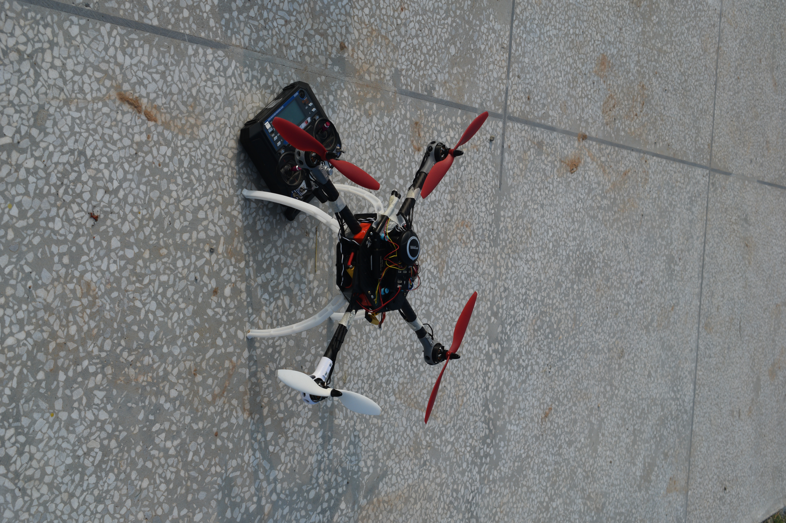
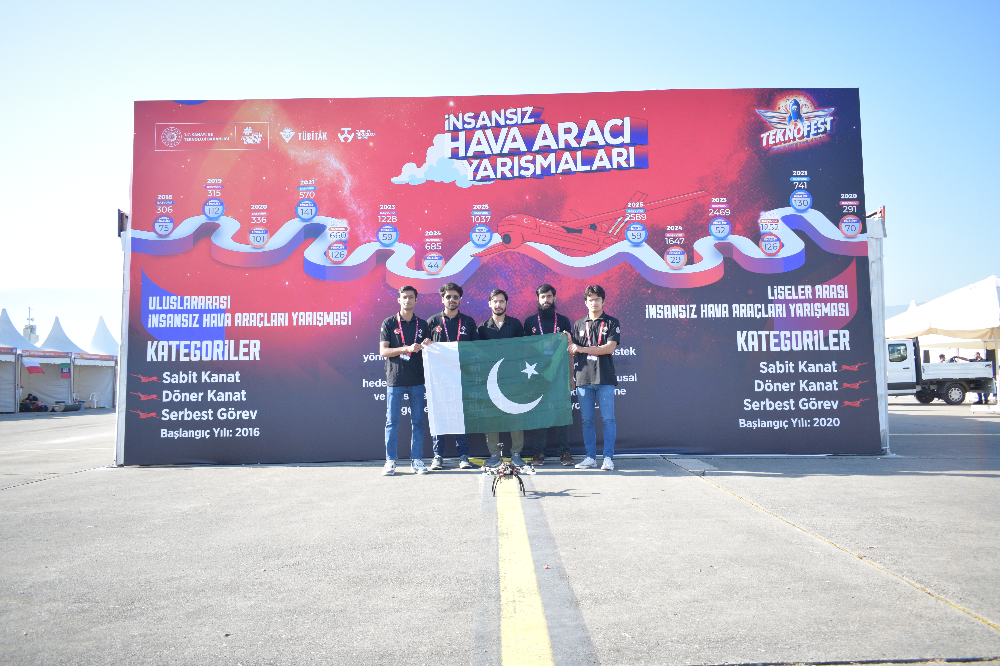
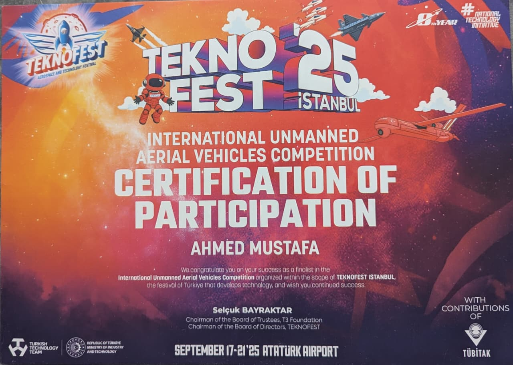
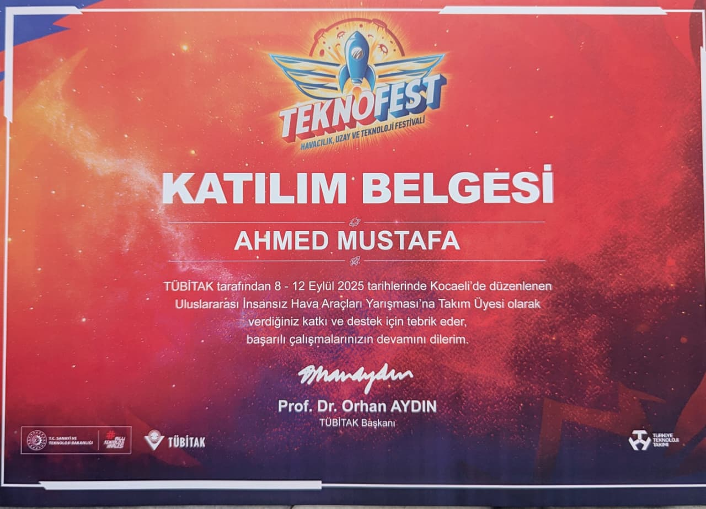

International Aerospace Competition · TEKNOFEST 2025 · Türkiye
Autonomous Rotary-Wing UAV
A multidisciplinary UAV project developed by Team MACH-X for the TEKNOFEST 2025 Rotary-Wing UAV Competition in Türkiye.
TEAM LEADERSHIP
Team Captain — Team MACH-X
Led an eight-member team representing Pakistan and the Pakistan Institute of Engineering and Applied Sciences (PIEAS) at an international aerospace competition.

LEADERSHIP
Team Leadership & Competition Execution
As Team Captain, I coordinated the technical work of an eight-member team, supported engineering decisions, managed mission preparation, and represented the team during the international competition.
PROJECT SUMMARY
Team MACH-X represented Pakistan and PIEAS at the international TEKNOFEST 2025 Rotary-Wing UAV Competition. We designed and developed a quadcopter capable of carrying a 600–800g payload and autonomously dropping it at a designated location using image-based vision processing. As Team Captain, I led the team while contributing to technical integration, mission planning, testing, and competition execution.
SYSTEM AND MISSION WORK
- Airframe designed in SolidWorks and validated through computational fluid dynamics (CFD) analysis, optimizing aerodynamic efficiency, rotor-airflow interaction, and structural load distribution across a 500mm diagonal frame prior to fabrication.
- Frame manufactured from carbon fiber composite, achieving a total takeoff weight of 2kg with a strength-to-weight ratio suited for dynamic flight loads under competition payload requirements.
- Flight control managed by a Pixhawk 2.4.8 running ArduPilot firmware, interfaced with 2.4GHz MAVLink telemetry for real-time state monitoring and command exchange with Mission Planner and QGroundControl ground control stations.
- Executed an autonomous flight performing an infinity-loop trajectory at 30m altitude over a 2km range, demonstrating flight stability and maneuverability under autonomous control.
- Conducted a second autonomous flight for payload delivery, carrying a 600–800g payload: a Raspberry Pi paired with a 16MP autofocus camera performed onboard image acquisition and target detection with over 80% accuracy, triggering a servo-driven payload release mechanism to deliver the payload within 10m of the target.
EVIDENCE
UAV & Team Photographs
Photographs from the development, testing, and international TEKNOFEST 2025 competition.

Competition Certificate
Official evidence of participation in the TEKNOFEST 2025 Rotary-Wing UAV Competition.

CAD / UAV Design
CAD models and structural design developed for the competition UAV.

Competition Report
Technical report documenting the UAV design, system architecture, mission development, testing, and competition preparation.
View Competition Report →Results & Qualification
Team Finalist Certificate
The team successfully qualified as a finalist
among more than 70 teams globally, providing
official evidence of our qualification for the
competition.
